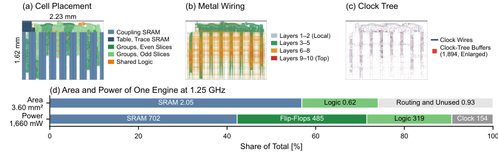

Finite identities behind the annealing correction and the hardware engine (field updates, address mapping, cut formula) are machine-checked in Lean 4 with Mathlib, and also in Rocq.
Abstract
Ising machines solve combinatorial optimization problems by annealing a network of spins. On dense problems, the least expensive hardware step updates all spins at once: stochastic cellular automata (SCA) decide every spin in parallel and read couplings only for the spins that flip. Such synchronous updates create an echo: the previous state of each spin returns to it through its neighbors. On K2000, a Max-Cut benchmark on a 2,000-node complete graph, two-thirds of all flips undo the same spin's flip one step earlier. This paper presents Anechoic, an FPGA Ising machine that subtracts this echo from every decision. Dynamical mean-field theory identifies the echo as an Onsager reaction; its one-step strength is the number of spins whose flip probability is strictly between 0 and 1, divided by twice the temperature. The decision logic already flags these spins, so the correction costs one population count per step; a temperature-scaled form needs none. An RTL engine executes a dense 2,000-spin step in 18.1 cycles plus 0.14 per flip, so every saved step and flip saves time. Both forms find better K2000 cuts at every step budget than five published binary-spin algorithms at their papers' settings. Twelve engines at 250 MHz on an AMD Alveo V80 reach a cut of at least 33,000 with 99% probability in 0.05 ms, 5.2 times faster than the fastest published hardware, at 5.4 mJ per solution; with 2-bit couplings, the temperature-scaled form is also faster than uncorrected SCA on 49 of 51 G-set graphs. On an NVIDIA GH200 GPU, the same engine is 2.3 times slower and needs 8.0 times more energy per solution, though its 240 concurrent anneals give 2.3 times the throughput. As a GlobalFoundries 22 nm ASIC at 1.25 GHz, twelve engines would reach the target in about 10 microseconds, 26 times faster than the fastest published hardware. The code is available at https://github.com/skethz/anechoic.
Problem
Synchronous stochastic cellular automata (SCA) annealers update all spins in parallel, which is cheap on dense problems. They suffer an 'echo': a spin's previous state returns through its neighbors and undoes flips. On the 2,000-node complete-graph Max-Cut benchmark K2000, two-thirds of flips undo the previous step.
Approach
Dynamical mean-field theory identifies the echo as an Onsager reaction. Its one-step coefficient is the number of linear (non-deterministic) decisions divided by twice the temperature, so it costs one population count per step; a temperature-scaled variant needs none. A hand-written RTL engine with flip-proportional step cost is deployed as twelve engines on an AMD Alveo V80 FPGA, and is also evaluated on a GPU and as a 22 nm ASIC design. Supporting finite identities (Table 1) are machine-checked in Lean 4 with Mathlib and in Rocq; the large-N step is not formalized.
Results
Twelve engines at 250 MHz reach a K2000 cut of at least 33,000 with 99% probability in 0.05 ms, 5.2x faster than the fastest published hardware, at 5.4 mJ per solution. The temperature-scaled form beats uncorrected SCA on most G-set graphs with 2-bit couplings. The projected ASIC would reach the target in about 10 µs.

Figure 6. ASIC implementation of one engine (v6) in GlobalFoundries 22FDX, placed and routed at 1.25 GHz. (a) SRAM macros and standard cells by design hierarchy: each of the eight slices holds four groups next to their coupling macros, so every coupling read stays within its slice. (b) Signal and clock wiring by metal layer. (c) Clock tree: 2,798 buffers and 756 clock gates drive about 162,000 fli
Label
Rule
Steps S
p
TTS99 [ms]
O1
Onsager-κT
280
0.338
0.050
O2
Onsager-online
360
0.326
0.053
B5
plain SCA (STATICA)
560
0.134
0.231
B7
plain SCA (STATICA)
1560
0.824
0.302
Selected K2000 schedules on the V80 (TTS99, primary estimate, ms)